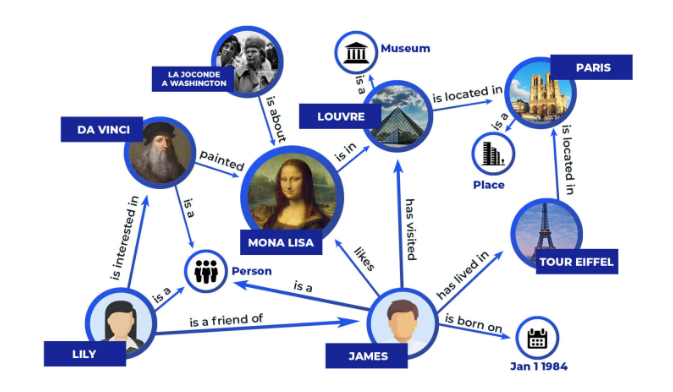
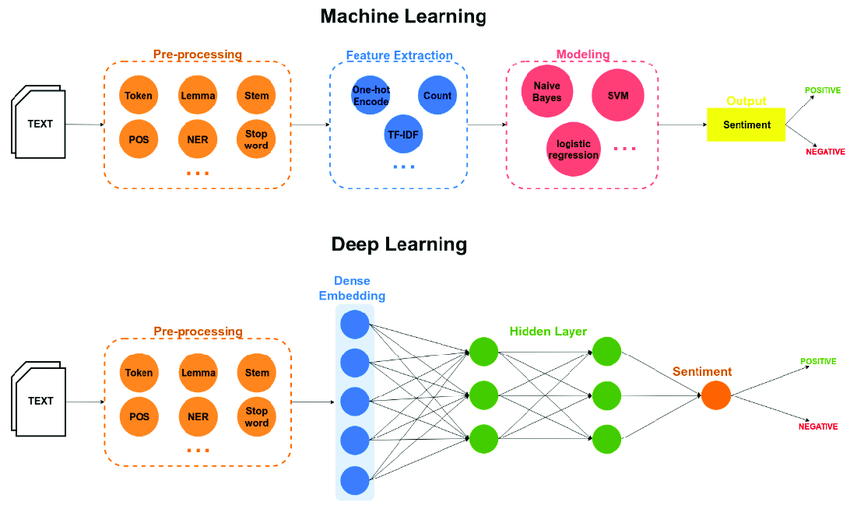

Natural Language Processing(NLP)
What is NLP
Natural language processing is a subfield of linguistics, computer science, and artificial intelligence concerned with the interactions between computers and human language, in particular how to program computers to process and analyze large amounts of natural language data.

What is Natural Language
In neuropsychology, linguistics, and the philosophy of language, a natural language or ordinary language is any language that has evolved naturally in humans through use and repetition without conscious planning or premeditation. Natural languages can take different forms, such as speech or signing. They are distinguished from constructed and formal languages such as those used to program computers or to study logic
Real World Applications
Contextual Advertisements
Natural Language Processing (NLP) is used for contextual advertisements by analyzing the text content of a webpage or a user’s search query to understand the context and intent behind it. Based on this analysis, relevant ads are shown to the user that match their interests and needs. NLP techniques such as named entity recognition, sentiment analysis, and topic modeling are used to extract relevant information from the text and match it with suitable ads. This helps to provide a more personalized and relevant advertising experience to the user.Email Clients - spam filtering, smart reply
NLP is used for email clients in two main ways: spam filtering and smart reply. In spam filtering, NLP algorithms are used to analyze the content of incoming emails to determine whether they are legitimate or spam.This is done by analyzing features such as the sender’s email address, the text content, and the presence of certain keywords.
Smart reply, on the other hand, uses NLP to suggest relevant and personalized responses to emails based on the context and content of the message.
NLP techniques such as text classification and natural language generation are used for this purpose, resulting in more efficient and effective email communication.
Social Media - removing adult content, opinion mining
NLP is used in social media platforms for two primary purposes: removing adult content and opinion mining. In the first case, NLP algorithms are used to analyze the text, images, and videos posted by users to identify and remove adult content, hate speech, and other inappropriate content. In opinion mining, NLP techniques such as sentiment analysis are used to extract insights from the large volumes of text data generated by social media users. This can help businesses and organizations understand customer opinions and preferences and make informed decisions based on them.Search Engines
NLP is used extensively in search engines to improve the accuracy and relevance of search results. NLP algorithms are used to analyze the text content of web pages and user queries to understand the underlying meaning and intent.This is done by techniques such as natural language understanding, entity recognition, and text classification. The search engine can then provide more relevant results to the user based on the context and meaning of their query, resulting in a better search experience. NLP is also used for features such as auto-complete, query expansion, and personalized search results.Chatbots
NLP is a crucial component of chatbots, which are designed to simulate human conversation and provide automated customer support. NLP algorithms are used to understand user queries and generate appropriate responses. This is done by techniques such as natural language understanding, intent recognition, and named entity recognition. Chatbots can also use sentiment analysis to understand the user’s mood and personalize their response accordingly. By leveraging NLP, chatbots can provide fast and efficient customer support, 24/7, and handle a wide range of queries, leading to enhanced customer satisfaction.
Common NLP Tasks
Document/Text Classification
NLP is used for text classification, which involves categorizing large volumes of text into predefined categories or classes. This is useful for tasks such as document classification, spam filtering, and sentiment analysis. NLP algorithms are used to analyze the text content and extract relevant features, such as the presence of certain keywords, the context of the text, and the structure of the document.These features are then used to train machine learning models that can classify new text data into the appropriate categories. NLP-based text classification can be used across a wide range of industries, including finance, healthcare, and e-commerce, to automate processes and improve efficiency.NoteWe do this by cleaning up the words, putting them in order, and showing the computer examples of what each group should look like. Then, the computer can sort new words into the right group based on what it learned before.
Sentiment analysis
NLP is used for sentiment analysis, which involves analyzing text data to determine the emotional tone or sentiment expressed by the author.
Sentiment analysis is useful in many applications, such as understanding customer feedback, monitoring social media sentiment, and predicting stock market trends.
NLP techniques such as natural language understanding and machine learning algorithms are used to identify sentiment-bearing words and phrases and classify them as positive, negative, or neutral.
Sentiment analysis can provide valuable insights into customer attitudes and opinions, allowing businesses to make data-driven decisions and improve their products and services.Note💡 We can teach computers to read and understand the feelings people express in their words using NLP. It’s like teaching the computer to know whether someone is happy or sad based on the words they use. This helps us understand how people feel about things like movies, products, or events. It’s like asking your friends how they feel about something, but the computer can do it faster and with more words
Information Retrieval
NLP is used for information retrieval, which involves finding relevant information from large collections of unstructured text data.Information retrieval is useful in many applications, such as search engines, chatbots, and question-answering systems. NLP techniques such as natural language understanding, text classification, and entity recognition are used to extract relevant information and understand the user’s query or intent. This allows the system to retrieve the most relevant and useful information, leading to a better user experience and increased efficiency.Note💡 We can teach computers to find the best information for us by reading and understanding lots of text using NLP. It’s like teaching the computer to look through a big book to find the answer to a question we have. The computer can find the information faster than we can and give us the best answer. It’s like having a super smart helper who can find anything we need!
Parts of Speech Tagging
NLP is used for Parts of Speech (POS) tagging, which involves labeling each word in a sentence with its corresponding part of speech, such as noun, verb, adjective, etc. POS tagging is useful in many NLP applications, such as text-to-speech conversion, machine translation, and information retrieval.NLP techniques such as rule-based tagging and statistical tagging are used to automatically assign POS tags to each word based on its context and other linguistic features. Accurate POS tagging helps improve the accuracy of downstream NLP tasks and is an important step in text analysis and understanding.Note💡 We can teach computers to recognize the different types of words in a sentence using NLP. It’s like teaching the computer to know whether a word is a person, a thing, an action, or a description. By doing this, the computer can understand what the sentence is about and what each word is doing. It’s like having a robot assistant that can help us understand sentences better!
Language Detection And Machine Translation
NLP is used for language detection and machine translation, which involves identifying the language of a text and translating it into another language. Language detection is useful in many applications, such as text classification, sentiment analysis, and content filtering. Machine translation is useful for cross-language communication and understanding, and can be used in applications such as international business and diplomacy.Note💡 We can teach computers to understand and speak different languages using NLP. It’s like having a super-smart robot that can translate languages for us! By teaching the computer different languages and their grammar, it can help us understand what someone is saying in a different language, and even help us talk to them back in their own language. It’s like having a personal language tutor at our fingertips!
Conversational Agents
NLP is used for conversational agents, which are computer programs designed to simulate human-like conversations with users. Conversational agents, also known as chatbots or virtual assistants, are used in many applications, such as customer support, personal assistants, and language learning. NLP techniques such as natural language understanding and generation, dialogue management, and sentiment analysis are used to enable conversational agents to understand and respond to user queries and generate appropriate responses. The goal is to create conversational agents that are indistinguishable from human agents in their conversational abilities.Note💡 We can teach computers to talk to us like humans using NLP. It’s like having a computer friend we can ask questions to and get answers from! By teaching the computer how to understand what we’re saying and how to respond, it can help us with things like finding information, playing games, or just keeping us company. It’s like having a cool virtual assistant we can chat with anytime!
Knowledge Graph and QA Systems
NLP is used for knowledge graph and question-answering (QA) systems, which involve organizing and connecting information from multiple sources to enable efficient information retrieval and answering of user queries. Knowledge graphs represent knowledge as nodes and edges in a graph structure, which can be queried using natural language questions. QA systems use NLP techniques such as entity recognition, relation extraction, and semantic parsing to understand user queries and retrieve relevant information from knowledge graphs or other sources. The goal is to create intelligent systems that can provide accurate and comprehensive answers to user queries.Click here for more information 
Note💡 We can teach computers to organize and understand information like we do using NLP. It’s like creating a big brain for the computer! By connecting different pieces of information and understanding what we’re asking, it can help us answer questions or find things we need. It’s like having a really smart friend who knows everything and can help us learn new things too!
Text Summarization
NLP is used for text summarization, which involves automatically generating a condensed version of a longer piece of text while preserving its essential information.NLP techniques such as sentence scoring, text classification, and semantic analysis are used to identify and extract the most important sentences or phrases from a document and create a summary. Text summarization is used in various applications such as news articles, academic papers, and legal documents to enable efficient information consumption and understanding. The goal is to create accurate and concise summaries that capture the essence of the original text.Topic Modelling
NLP is used for topic modelling, which is a technique that identifies hidden topics or themes in a collection of documents. It involves grouping together similar words and phrases into topics, and then assigning each document a distribution of topics that best represents its content.NLP techniques such as clustering, latent Dirichlet allocation, and word frequency analysis are used to perform topic modelling. Topic modelling is useful in various applications such as information retrieval, recommendation systems, and content analysis. It enables better organization and understanding of large collections of text data by identifying key themes and patterns.Click here for more information


Text Generation
NLP is used for text generation, which involves generating new text that is similar to the style and content of existing text.This can be done using machine learning models that have been trained on large amounts of text data. NLP techniques such as recurrent neural networks and generative adversarial networks are commonly used for text generation. Text generation has various applications such as chatbots, automatic text completion, and content creation.It enables machines to produce human-like text that can be useful in various industries such as marketing and customer service.
Spell Checking And Grammar Correction
NLP is used for spell checking and grammar correction by analyzing written text and comparing it to a database of correct spellings and grammar rules. This involves identifying and correcting spelling errors, as well as suggesting alternative words or phrasings that would improve grammar and overall readability. By using NLP techniques, spell checking and grammar correction tools can quickly and accurately identify errors and suggest corrections, making it easier for writers to produce high-quality written content.
Text parsing
Text parsing is the process of breaking down text into smaller components to better understand its structure and meaning.In natural language processing (NLP), text parsing is used to analyze and extract important information from text, such as identifying the subject, object, and verb in a sentence. It involves using algorithms and models to automatically analyze and categorize different parts of text, allowing for more efficient processing and analysis of large amounts of data. Text parsing is used in a variety of NLP applications, including sentiment analysis, machine translation, and chatbots.
Speech To Text
Speech to Text is a popular application of NLP that involves converting spoken language into text. This technology uses techniques like audio signal processing and natural language understanding to accurately transcribe spoken words into written text. Speech to Text is used in various applications like dictation software, automated subtitling for videos, and virtual assistants.
Approaches to NLP
Over the years, Natural Language Processing (NLP) research has seen different approaches, each building upon the previous ones. Some of the major approaches include:
Heuristic methods
Heuristic methods or heuristic technique, is any approach to problem solving or self-discovery that employs a practical method that is not guaranteed to be optimal, perfect, or rational, but is nevertheless sufficient for reaching an immediate, short-term goal or approximation. Where finding an optimal solution is impossible or impractical, heuristic methods can be used to speed up the process of finding a satisfactory solution.

Examples
Regular Expression
Regular regression is a classic statistical approach used in natural language processing (NLP) under the heuristic method. In regular regression, a linear model is trained using a set of features extracted from the text data. These features are typically hand-crafted by domain experts and can include measures of word frequency, length, and syntax. The trained model can then be used for tasks such as sentiment analysis, named entity recognition, and text classification. However, regular regression has some limitations, such as the need for expert feature engineering and its inability to capture complex relationships between words and sentences.WordNet
WordNet is a lexical database of English words, which was developed by researchers at Princeton University. It organizes words into sets of synonyms called “synsets” and describes the semantic relationships between them. Each synset contains a group of words that share a common meaning, and the relationships between synsets are captured in a network of nodes and edges.In NLP, WordNet is often used for tasks such as word sense disambiguation and semantic similarity analysis. WordNet provides a way to group words with similar meanings, which can be helpful in determining the intended meaning of a word in context. For example, if a sentence contains the word “bank,” WordNet can be used to identify whether it refers to a financial institution or a river bank, based on the surrounding words and the context of the sentence.
Overall, WordNet is a useful tool for NLP researchers and practitioners who need to work with language data and want to leverage the relationships between words and concepts to improve their analyses.
Click here for more information

Open Mind Common Sense
Open Mind Common Sense (OMCS) is a knowledge base developed by the MIT Media Lab, which aims to provide a large, structured database of common-sense knowledge that can be used in natural language processing applications. OMCS is created through crowdsourcing and allows people to enter statements about the world in natural language, which are then parsed and stored in a database. This knowledge base can be used to help NLP systems better understand the meaning behind natural language and make more accurate predictions about human behavior and actions. The heuristic approach of OMCS involves manually designing a structured database of knowledge, which can be queried and used to improve NLP applications.
Advantages
Heuristic methods in NLP have several advantages.
- First, they do not require large amounts of labeled data, which can be time-consuming and expensive to obtain.
- Second, heuristic methods can be easily customized for specific applications and domains.
- Third, they are often more interpretable than machine learning or deep learning methods, allowing for better understanding of how the system is making its decisions.
- Fourth, heuristic methods can be faster to implement and run than more complex approaches.
Current Applications of Heuristic Methods in Natural Language Processing
Heuristic methods have been used in Natural Language Processing (NLP) for decades, and they continue to be used in many current NLP applications. One such application is sentiment analysis, where heuristic rules are used to identify positive, negative, or neutral sentiment in text. Heuristic methods are also used in named entity recognition, where rules based on language patterns are used to identify and classify entities like names, organizations, and locations. Another application is question answering, where heuristic methods are used to generate answers based on patterns in the question and knowledge sources.
In addition to these applications, heuristic methods are also used for text classification, information extraction, and summarization. While deep learning models have recently gained popularity in NLP, heuristic methods are still widely used because they are often more interpretable and easier to modify than complex neural networks. Furthermore, heuristic methods can be useful in scenarios where large amounts of annotated data are not available, and rule-based methods can be created and fine-tuned with smaller datasets.
Overall, heuristic methods continue to play an important role in NLP, and they are likely to remain a key component of NLP systems in the future.
Machine learning-based methods

With the advent of machine learning, researchers began developing models that learned patterns and relationships in language data. These models could be trained on large datasets, allowing them to capture more complex language structures.
Advantages of Machine Learning Methods over Heuristic Methods in NLP
Machine learning methods have become increasingly popular in Natural Language Processing (NLP) due to their numerous advantages over heuristic methods. Some of the advantages are:
Learning from Data Machine learning algorithms can learn from large datasets and generalize well on unseen data, which is not possible with heuristic methods.
Adaptability Machine learning methods can adapt to new data and improve their performance over time, whereas heuristic methods require manual tuning for each task.
Higher Accuracy Machine learning methods can achieve higher accuracy compared to heuristic methods, especially in complex tasks such as speech recognition, sentiment analysis, and machine translation.
Time-Saving Machine learning methods can automate tasks that would be time-consuming or impossible to perform manually, such as text classification or clustering.
Scalability Machine learning methods can scale to large datasets and handle high-dimensional data, which is a challenge for heuristic methods.
Machine learning methods can scale to large datasets and handle high-dimensional data, which is a challenge for heuristic methods.
Machine learning algorithms used in NLP
There are several machine learning algorithms used in NLP, some of which are Naive Bayes - a probabilistic algorithm that works well for text classification tasks such as spam filtering, sentiment analysis, and topic categorization.
Support Vector Machines (SVM) - a supervised learning algorithm that can be used for text classification and sequence labeling tasks.
Logistic Regression - A type of algorithm used for binary classification problems, where the goal is to predict whether a given input belongs to one of two possible classes.
LDA (Latent Dirichlet Allocation) - A probabilistic model used for topic modeling in NLP, where the goal is to identify topics within a collection of documents.
Hidden Markov Models - A statistical model used for sequence prediction problems, where the goal is to predict the sequence of states or outputs based on observed data. It is commonly used for speech recognition and named entity recognition.
Deep learning-based methods
Deep learning, a subset of machine learning, involves the use of artificial neural networks with multiple layers to learn increasingly complex patterns. Deep learning-based models, such as Recurrent Neural Networks (RNNs) and Convolutional Neural Networks (CNNs), have shown significant success in NLP tasks such as language modeling, machine translation, and sentiment analysis. These models require large amounts of data and computing power to train, but they have led to many breakthroughs in the field.

Advantages of Deep Learning Methods in NLP
Deep learning methods have several advantages over traditional machine learning methods in NLP:
Better performance:Deep learning models can achieve higher accuracy levels than traditional machine learning models in complex NLP tasks such as language translation and sentiment analysis.Feature learning:Deep learning algorithms can automatically learn features from the data, eliminating the need for feature engineering, which is often required in traditional machine learning.Handling large datasets:Deep learning algorithms are better suited for handling large datasets, as they can learn from a vast amount of data without overfitting or losing accuracy.Generalization:Deep learning models can generalize better to unseen data, allowing them to make accurate predictions on new data points.
Common Neural Network Architectures for NLP
Neural networks have been very effective in natural language processing tasks. Here are some popular architectures used in NLP:
Recurrent Neural Network (RNN): It is a type of neural network where connections between nodes form a directed cycle. RNNs are useful for processing sequential data.Long Short-Term Memory (LSTM): It is a type of RNN that solves the vanishing gradient problem and allows the model to remember important information from earlier in the sequence.Gated Recurrent Unit (GRU)/Convolutional Neural Network (CNN): These are alternative RNN architectures that have been shown to work well for certain NLP tasks.Transformers:It is a newer architecture that has gained popularity in recent years, especially in tasks such as language modeling and machine translation. It is based on a self-attention mechanism that allows the model to focus on different parts of the input sequence.Autoencoders:It is a type of neural network that can be used for unsupervised learning tasks such as text generation or representation learning.
Challenges in NLP
Ambiguity
One of the major challenges in Natural Language Processing (NLP) is the ambiguity of human language. Ambiguity refers to situations where a word or a sentence can have multiple meanings or interpretations. For example, the word “bank” can refer to a financial institution or a riverbank. Similarly, the sentence “I saw her duck” can mean “I saw the bird she owns” or “I saw her physically duck down.” This creates confusion for NLP models that rely on clear and unambiguous language. NLP researchers tackle the challenge of ambiguity by developing algorithms that can understand the context in which words are used and disambiguate the multiple meanings based on the context.
Dealing with Contextual Words
Contextual words are words that take on different meanings depending on the context in which they are used.This poses a major challenge in NLP as machines may not be able to accurately interpret the intended meaning of such words. For example, the word “bank” can refer to a financial institution or a river bank. Another example is the word “bass” which can refer to a fish or a low-frequency sound in music.
To address this challenge, NLP models are designed to consider the context of the word within the sentence, paragraph or document in order to determine the appropriate meaning. Some popular techniques used to deal with contextual words include word sense disambiguation and named entity recognition. However, the complexity of language and the vast number of possible contexts means that this remains an ongoing challenge in NLP.
Colloquialisms and slang
Colloquialisms and slang are informal words and expressions used in everyday language, which can pose a challenge in NLP. These words may not have a clear definition or meaning, and their usage can vary based on context and culture. For example, the slang term “lit” can mean exciting or under the influence of drugs, depending on the context. Handling colloquialisms and slang is particularly important in social media analysis and chatbot development, where informal language is commonly used.
Synonyms
One of the major challenges in natural language processing (NLP) is dealing with synonyms, which are words that have similar meanings but are different in their spelling or usage. This creates ambiguity and difficulty in understanding the true meaning of a sentence.For example, “buy” and “purchase” are synonyms, but they may be used differently in different contexts, such as “I bought a new car” versus “I purchased a new house.” NLP algorithms must be able to accurately identify and interpret synonyms in order to understand the intended meaning of a sentence.
Irony, Sarcasm, and Tonal Differences
One of the significant challenges in NLP is detecting the tone of a text, especially irony and sarcasm. This is because the tone is often conveyed through the context and cannot be determined solely based on the words used.For example, the statement “Oh great, another meeting” can be interpreted as positive or negative depending on the tone. Additionally, different regions or cultures may use different tonal expressions, making it difficult for NLP models to accurately detect them.
Spelling Errors
Spelling errors are a common challenge in NLP, as they can significantly affect the accuracy of text analysis.For example, the word “teh” instead of “the” can cause confusion for NLP algorithms. This challenge is particularly prevalent in user-generated content such as social media posts, where people often use abbreviations or non-standard spellings. NLP techniques such as spell checking and correction can help mitigate this issue, but they may not always be foolproof.
Creativity
Explanation: One of the significant challenges in NLP is the ability to generate creative and novel sentences. It involves generating language that is not just grammatically correct but also unique and meaningful. Current NLP models struggle with producing original content, especially in tasks like text generation, poetry, and storytelling. For instance, a model might be able to generate a coherent sentence, but it may not be imaginative or creative.
Example: A simple example would be generating a poem. While current NLP models can produce a grammatically correct poem, they might not be able to create a poem that is creative, has rhyme or meter, and evokes emotions in the reader. This is because generating creative content involves understanding not just the meaning of words but also their associations, connotations, and cultural significance.
Diversity
One of the significant challenges in NLP is dealing with diversity in language, which includes differences in language structures, styles, dialects, and cultures. For example, different regions may have different ways of expressing the same idea, making it difficult to develop universal language models. Additionally, languages themselves can have varying levels of complexity, making it challenging to develop models that can handle the nuances of each language. An example of this challenge is that many languages have multiple scripts, and some languages may not even have a written form.